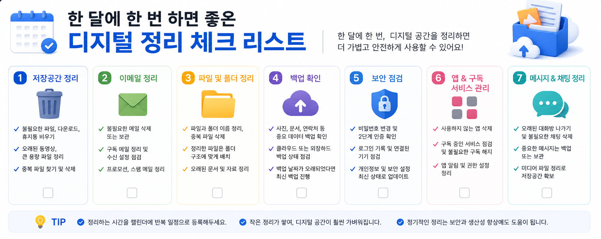

한 달에 한 번 하면 좋은 디지털 정리 체크리스트
앱, 알림, 저장공간, 계정 보안, 백업 상태를 한 달에 한 번 점검하는 현실적인 디지털 정리 방법입니다.

디지털 기기와 앱 설정은 한 번에 모두 바꾸기보다, 현재 상태를 확인하고 필요한 부분부터 차근차근 조정하는 편이 안전합니다. 이 글은 처음 확인할 항목과 정리 순서, 주의할 점을 함께 볼 수 있도록 구성했습니다.
한 달에 한 번 정리가 필요한 이유
스마트폰과 PC는 매일 사용하지만 정리는 미루기 쉽습니다. 사진, 다운로드 파일, 앱 알림, 계정 로그인 기록은 조금씩 쌓이다가 어느 순간 불편을 만듭니다. 매일 관리하기 어렵다면 한 달에 한 번만 시간을 정해도 충분히 깔끔한 상태를 유지할 수 있습니다.
사용하지 않는 앱 확인하기
먼저 최근 한 달 동안 사용하지 않은 앱을 확인하세요. 잠깐 설치한 쇼핑 앱, 이벤트 앱, 테스트용 앱은 그대로 남아 권한과 알림을 유지하는 경우가 있습니다. 삭제하기 전에 필요한 데이터가 있는지 확인하고, 더 이상 필요 없다면 정리하는 것이 좋습니다.
알림과 권한 점검하기
앱을 계속 사용하더라도 모든 알림이 필요한 것은 아닙니다. 배송, 결제, 보안 알림처럼 중요한 것은 남기고 광고성 알림은 줄이는 방식이 좋습니다. 위치, 카메라, 마이크 권한도 사용 목적이 분명한 앱에만 허용되어 있는지 확인하세요.
저장공간과 다운로드 폴더 정리하기
사진과 동영상뿐 아니라 다운로드 폴더도 확인해야 합니다. 이미 제출한 문서, 다시 받을 수 있는 설치 파일, 중복 이미지가 남아 있을 수 있습니다. 파일을 삭제하기 전에는 백업 여부를 확인하고, 중요한 자료는 폴더를 나눠 보관하세요.
계정 보안과 백업 상태 확인하기
마지막으로 주요 계정의 보안 알림과 백업 상태를 봅니다. 구글, 애플, 네이버 같은 계정은 복구 이메일과 전화번호가 최신인지 확인하는 것이 좋습니다. 사진과 문서 백업이 정상적으로 완료되고 있는지도 함께 점검하면 자료 손실 위험을 줄일 수 있습니다.

설정을 바꾸기 전 마지막 확인
- 최근 사용하지 않은 앱 삭제하기
- 광고성 알림 줄이기
- 앱 권한 확인하기
- 다운로드 폴더 정리하기
- 계정 보안과 백업 상태 확인하기
설정을 바꾸거나 파일을 삭제하기 전에는 중요한 자료가 남아 있는지 한 번 더 확인하는 것이 좋습니다. 가족과 함께 쓰는 기기나 업무용 계정이라면 변경 내용을 공유해 두면 불필요한 혼선을 줄일 수 있습니다.
한 달 점검이 필요한 실제 상황
매일 쓰는 스마트폰은 알림, 저장공간, 계정 로그인, 구독 결제가 조금씩 쌓입니다. 한 달에 한 번만 정리해도 불필요한 알림과 오래된 앱, 사용하지 않는 계정을 줄일 수 있어 휴대폰 관리가 훨씬 쉬워집니다.
월간 정리에서 흔한 실수
한 번에 모든 앱과 파일을 정리하려 하면 중간에 놓치는 항목이 생깁니다. 저장공간, 보안, 알림, 결제처럼 항목을 나눠 확인하고 마지막에 바뀐 내용을 메모해 두면 다음 달 점검이 빨라집니다.
한 달에 한 번 하면 좋은 디지털 관련 설정을 먼저 확인해야 하는 이유
한 달에 한 번 하면 좋은 디지털 관련 설정은 단순히 메뉴 하나를 켜고 끄는 문제가 아니라, 실제 사용 흐름에서 어떤 불편을 줄이려는지 먼저 정해야 합니다. 같은 메뉴라도 기기 제조사, 운영체제 버전, 앱 업데이트 상태에 따라 이름이 달라질 수 있으므로 현재 화면을 기준으로 차근차근 확인하는 것이 좋습니다.
한 달에 한 번 하면 좋은 디지털에서 자주 생기는 실수
한 달 점검이 필요한을 정리할 때는 되돌리기 어려운 삭제나 계정 변경을 마지막 단계로 미루는 것이 좋습니다. 먼저 표시, 알림, 권한처럼 쉽게 복구할 수 있는 항목부터 확인하면 실수 부담을 줄일 수 있습니다.
한 달에 한 번 하면 좋은 디지털 점검 후 다시 볼 부분
한 달 점검이 필요한은 사용자마다 필요한 범위가 다르기 때문에, 자주 쓰는 앱과 계정부터 적용하는 편이 좋습니다. 바꾸기 전 화면과 바꾼 뒤 결과를 비교하면 어떤 설정이 실제로 도움이 됐는지 판단하기 쉽습니다.